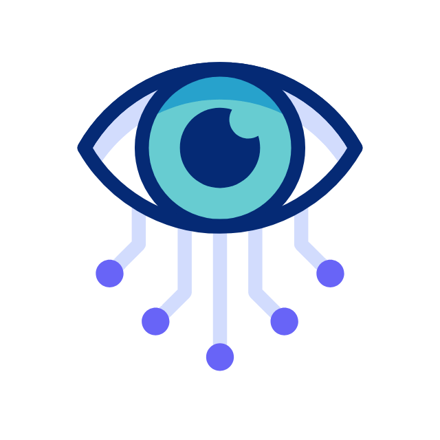
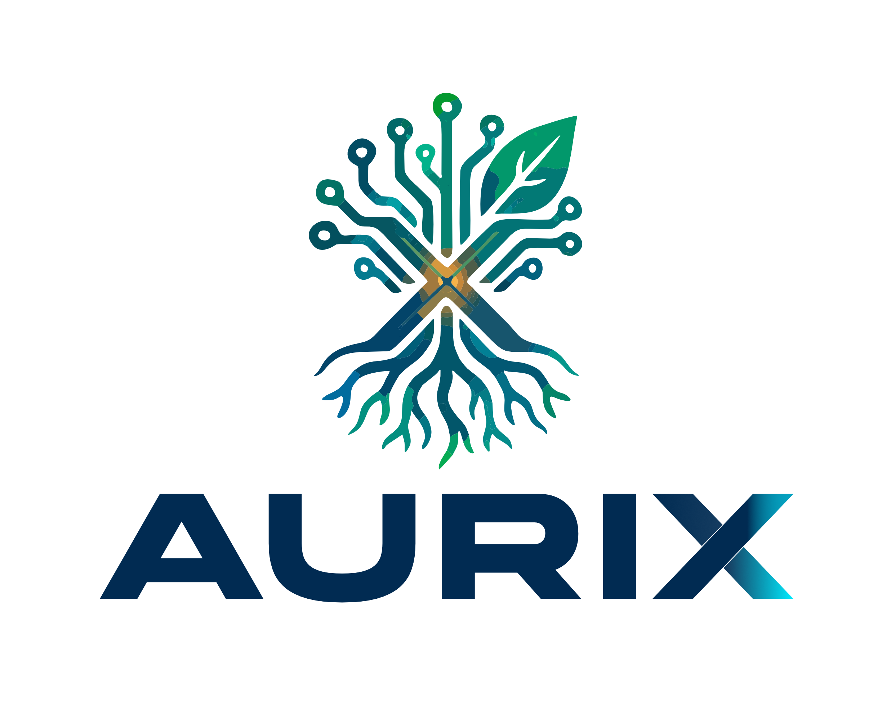

<!DOCTYPE html>
<html lang="es">
<head>
<meta charset="UTF-8">
<meta name="viewport" content="width=device-width, initial-scale=1.0">
<title>AURIX — Sistemas de Información para tu Negocio</title>
<script crossorigin src="https://unpkg.com/react@18/umd/react.production.min.js"></script>
<script crossorigin src="https://unpkg.com/react-dom@18/umd/react-dom.production.min.js"></script>
<script src="https://unpkg.com/@babel/standalone/babel.min.js"></script>
<link href="https://fonts.googleapis.com/css2?family=Poppins:wght@300;400;600;700;800&display=swap" rel="stylesheet">
<style>
  :root{
    --primary:#103a60; --primary-light:#0e8c80; --accent:#e4a536;
    --navy-deep:#0c2c4a; --gold-light:#f5c86e; --teal-light:#5fc3b6;
    --bg:#f6f7f8; --bg-soft:#eceef1; --card:#ffffff; --text:#122c46; --muted:#5b6b7c;  /* --- Fuente personalizada Anddalan --- */
@font-face{
  font-family: 'AGRESSIVE';
  src: url('./assets/fonts/AGRESSIVE.otf') format('truetype');
  font-weight: 900;
  font-style: normal;
  font-display: swap;
}
  }
  *{margin:0;padding:0;box-sizing:border-box;font-family:'Poppins',sans-serif;}
  body{background:var(--bg);color:var(--text);}
  nav{position:fixed;top:0;width:100%;display:flex;justify-content:space-between;align-items:center;
      padding:10px 6%;background:rgba(246,247,248,.88);backdrop-filter:blur(12px);z-index:1000;
      border-bottom:1px solid rgba(16,58,96,.1);}
  .logo{display:flex;align-items:center;gap:10px;font-size:1.3rem;font-weight:800;letter-spacing:1px;color:var(--primary);}
  .logo img{height:70px;width:auto;display:block;}
  .logo span{font-weight:400;color:var(--muted);font-size:.72rem;letter-spacing:.2px;display:block;}
  .logo-text{
  display:flex;
  flex-direction:column;
  line-height:1.1;
}
.logo-text span{
  font-weight:400;
  color:var(--muted);
  font-size:.72rem;
  letter-spacing:.2px;
}
  .nav-links{display:flex;gap:24px;list-style:none;}
  .nav-links a{color:var(--muted);text-decoration:none;font-size:.9rem;transition:.3s;}
  .nav-links a:hover{color:var(--primary);}
  section{padding:60px 6%;max-width:1200px;margin:0 auto;}
  .hero{min-height:100vh;display:flex;flex-direction:column;justify-content:center;align-items:center;
        text-align:center;background:radial-gradient(ellipse at 70% 15%,rgba(14,140,128,.10),transparent 60%),
        radial-gradient(ellipse at 20% 80%,rgba(228,165,54,.08),transparent 55%);}
  .hero img.hero-logo{height:120px;width:auto;margin-bottom:18px;}
  .badge{border:1px solid rgba(14,140,128,.4);border-radius:50px;padding:6px 18px;font-size:.8rem;
         color:#0b6a61;font-weight:600;margin-bottom:24px;background:rgba(14,140,128,.08);}
h1{
  font-family: 'AGRESSIVE', 'Poppins', sans-serif;
  font-size: clamp(2.2rem,5vw,3.8rem);
  font-weight: 900;
  line-height: 1.15;
  margin-bottom: 6px;
  color: var(--primary);
  letter-spacing: -0.5px;   /* la Anddalan es muy pesada, un poco de tracking negativo queda bien */
}

h2{
  font-family: 'AGRESSIVE', 'Poppins', sans-serif;
  font-size: 2.1rem;
  font-weight: 900;
  margin-bottom: 8px;
  color: var(--primary);
  letter-spacing: -0.3px;
}  h1 .grad{color:var(--primary-light);display:block;}
  .divider{width:120px;height:4px;border-radius:4px;background:var(--accent);margin:22px auto;}
  .hero p{max-width:640px;color:var(--muted);font-size:1.1rem;margin-bottom:36px;}
  .btn{display:inline-block;padding:14px 34px;border-radius:50px;font-weight:600;text-decoration:none;transition:.3s;}
  .btn-primary{background:var(--primary);color:#fff;box-shadow:0 8px 24px rgba(16,58,96,.25);}
  .btn-primary:hover{transform:translateY(-3px);box-shadow:0 12px 32px rgba(16,58,96,.35);background:var(--navy-deep);}
  .btn-outline{border:2px solid var(--primary-light);color:var(--primary);margin-left:14px;}
  .btn-outline:hover{background:rgba(14,140,128,.1);}
  h2{font-size:2.1rem;font-weight:700;margin-bottom:8px;color:var(--primary);}
  .subtitle{color:var(--muted);margin-bottom:48px;max-width:revert;   line-height:1.6; }
  .grid-2{display:grid;grid-template-columns:repeat(auto-fit,minmax(320px,1fr));gap:32px;}
  .card{background:var(--card);border:1px solid rgba(16,58,96,.1);border-radius:20px;padding:36px;transition:.3s;
        box-shadow:0 4px 18px rgba(16,58,96,.06);}
  .card:hover{transform:translateY(-6px);border-color:var(--primary-light);box-shadow:0 20px 42px rgba(16,58,96,.14);}
  .card h3{font-size:1.35rem;margin:14px 0 6px;color:var(--primary);}
  .card .tag{display:inline-block;background:rgba(228,165,54,.15);color:#a06e17;font-size:.75rem;
             padding:4px 14px;border-radius:20px;margin-bottom:6px;font-weight:600;}
  .modules{display:flex;flex-wrap:wrap;gap:8px;margin:18px 0 24px;}
  .module{background:rgba(14,140,128,.08);border:1px solid rgba(14,140,128,.25);color:#0b6a61;
          font-size:.8rem;padding:6px 14px;border-radius:20px;}
.icon{
  width:auto;
  height:80px;
  display:flex;
  align-items:center;
  justify-content:flex-start;
  background:transparent;
  border:none;
  box-shadow:none;
  overflow:visible;
  margin-bottom:14px;
}
.icon img{
  height:80px;
  width:auto;
  max-width:180px;
  object-fit:contain;
  display:block;
}
  .pillars{display:grid;grid-template-columns:repeat(auto-fit,minmax(280px,1fr));gap:32px;}
  .pillar{background:linear-gradient(160deg,var(--card),var(--bg-soft));border-radius:20px;padding:36px;
          border-top:4px solid var(--primary-light);box-shadow:0 4px 18px rgba(16,58,96,.06);}
  .pillar.mission{border-top-color:var(--accent);} .pillar.vision{border-top-color:var(--primary-light);}
  .pillar h3{font-size:1.25rem;margin-bottom:14px;color:var(--primary);}
  .pillar p{color:var(--muted);line-height:1.7;font-size:.95rem;}
  .values-grid{display:grid;grid-template-columns:repeat(auto-fit,minmax(280px,1fr));gap:24px;}
  .value{background:var(--card);border-radius:16px;padding:28px;text-align:center;border:1px solid rgba(16,58,96,.1);
         transition:.3s;box-shadow:0 4px 18px rgba(16,58,96,.05);}
  .value:hover{border-color:var(--accent);}
  .value .vicon{font-size:2rem;margin-bottom:12px;}
  .value h4{font-size:1.05rem;margin-bottom:8px;color:var(--primary);}
  .value p{color:var(--muted);font-size:.85rem;line-height:1.6;}
  .obj-list{list-style:none;display:flex;flex-direction:column;gap:20px;}
  .obj{display:flex;gap:20px;background:var(--card);padding:24px 28px;border-radius:16px;
       border-left:4px solid var(--accent);align-items:flex-start;box-shadow:0 4px 18px rgba(16,58,96,.06);}
  .obj .num{font-size:1.4rem;font-weight:800;color:var(--accent);min-width:40px;}
  .obj p{color:var(--muted);line-height:1.65;font-size:.95rem;}
  .arch{display:flex;gap:24px;align-items:flex-start;background:rgba(14,140,128,.05);
        border:1px solid rgba(14,140,128,.2);border-radius:20px;padding:36px 40px;margin-top:40px;}
  .arch p{color:var(--muted);line-height:1.7;font-size:.95rem;}
    /* --- Footer compacto --- */
footer{
  background:var(--navy-deep);
  color:#cbd6e2;
  padding:36px 6% 24px;
  margin-top:60px;
  text-align:center;
}

/* Fila superior: logo + tagline */
.footer-row{
  display:flex;
  flex-direction:column;
  justify-content:center;
  align-items:center;
  gap:10px;
  margin-bottom:22px;
}

.footer-row img.footer-logo,
img.footer-logo{
  height:44px !important;
  max-height:44px !important;
  width:auto !important;
  max-width:180px !important;
  object-fit:contain;
  display:block;
  flex-shrink:0;
}
.flogo{
  font-size:1.2rem;
  font-weight:800;
  letter-spacing:1.5px;
  color:#ffffff;
}
.footer-tagline{
  font-size:.8rem;
  color:var(--teal-light);
  letter-spacing:.3px;
}

/* Redes sociales en fila horizontal */
.footer-socials{
  display:flex;
  justify-content:center;
  align-items:center;
  gap:12px;
  flex-wrap:wrap;
  margin-bottom:22px;
}
.social-item{
  display:inline-flex;
  align-items:center;
  gap:10px;
  padding:8px 16px;
  border-radius:50px;
  background:rgba(255,255,255,.08);
  border:1px solid rgba(255,255,255,.15);
  color:#ffffff;
  text-decoration:none;
  transition:all .25s ease;
}
.social-item:hover{
  background:rgba(95,195,182,.2);
  border-color:var(--teal-light);
  transform:translateY(-2px);
  box-shadow:0 6px 16px rgba(95,195,182,.25);
}
.social-icon{
  font-size:1.05rem;
  line-height:1;
}
.social-text{
  display:flex;
  flex-direction:column;
  align-items:flex-start;
  line-height:1.2;
}
.social-label{
  font-size:.62rem;
  color:var(--teal-light);
  text-transform:uppercase;
  letter-spacing:.6px;
  font-weight:700;
  margin-bottom:1px;
}
.social-value{
  font-size:.82rem;
  font-weight:600;
  color:#ffffff;
}

/* Copyright compacto */
.footer-copy{
  font-size:.75rem;
  color:#8ba3bd;
  line-height:1.5;
  margin:0 auto;
  max-width:820px;
}
  footer .flogo{font-size:1.3rem;font-weight:800;letter-spacing:1px;color:#fff;}
  footer .fmuted{color:#9fb3c8;}
  .contact-title{color:var(--gold-light);font-weight:700;font-size:1.1rem;margin:28px 0 20px;}
  .contact-grid{display:grid;grid-template-columns:repeat(auto-fit,minmax(200px,1fr));gap:22px;max-width:640px;margin:0 auto;text-align:left;}
  .contact-item .clabel{color:var(--teal-light);font-size:.85rem;display:block;margin-bottom:2px;}
  .contact-item .cvalue{color:#fff;font-weight:700;font-size:1.02rem;}
  .preview-note{color:var(--muted);font-size:.85rem;margin-bottom:28px;font-style:italic;}
  .preview-group{margin-bottom:44px;}
  .preview-group h3{color:var(--primary);font-size:1.15rem;margin-bottom:14px;}
  /* --- Logo de fondo con transparencia --- */
body::before{
  content:"";
  position:fixed;
  inset:0;
  background-image:url("./assets/logos/logo-aurix.png");
  background-repeat:no-repeat;
  background-position:center center;
  background-size:min(60vw, 600px);
  opacity:0.04;              /* ← nivel de transparencia (0.03 = muy sutil, 0.15 = más visible) */
  pointer-events:none;       /* ← no interfiere con clics */
  z-index:0;
  filter:grayscale(0%);      /* opcional: prueba grayscale(100%) para blanco y negro */
}

  /* --- Carrusel de slides --- */
  .slide-carousel{
    position:relative;
    width:100%;
    aspect-ratio: 16/10;
    max-height:640px;
    border-radius:20px;
    overflow:hidden;
    background:var(--bg-soft);
    box-shadow:0 20px 50px rgba(16,58,96,.15);
    margin-bottom:16px;
  }
  .slide{
  position:absolute;
  inset:0;
  width:100%;
  height:100%;
  object-fit:contain;           /* ← antes: cover */
  object-position:center top;   /* ← alinea arriba */
  background:#0c2c4a;           /* ← franjas de relleno */
  padding:12px;                 /* ← pequeño margen interno */
  opacity:0;
  transform:scale(1.02);
  transition:opacity .6s ease, transform .6s ease;
  pointer-events:none;
  box-sizing:border-box;
}
  .slide.active{
    opacity:1;
    transform:scale(1);
    pointer-events:auto;
    z-index:2;
  }
  .slide.leaving{
    opacity:0;
    transform:scale(1.05);
    z-index:1;
  }

  /* Flechas */
  .slide-arrow{
    position:absolute;
    top:50%;
    transform:translateY(-50%);
    width:46px;height:46px;
    border-radius:50%;
    border:none;
    background:rgba(255,255,255,.9);
    color:var(--primary);
    font-size:1.6rem;
    font-weight:700;
    line-height:1;
    cursor:pointer;
    z-index:10;
    display:flex;
    align-items:center;
    justify-content:center;
    box-shadow:0 6px 18px rgba(0,0,0,.15);
    transition:.25s ease;
  }
  .slide-arrow:hover{background:#fff;transform:translateY(-50%) scale(1.1);}
  .slide-arrow.left{left:18px;}
  .slide-arrow.right{right:18px;}

  /* Info overlay */
  .slide-info{
    position:absolute;
    left:0;right:0;bottom:0;
    padding:60px 24px 20px;
    background:linear-gradient(to top,rgba(12,44,74,.92),transparent);
    color:#fff;
    z-index:5;
    display:flex;
    flex-direction:column;
    gap:4px;
  }
  .slide-sys{
    font-size:.75rem;
    font-weight:700;
    letter-spacing:.5px;
    text-transform:uppercase;
    color:var(--gold-light);
  }
  .slide-cap{
    font-size:.95rem;
    line-height:1.4;
    color:#fff;
    opacity:.95;
  }

  /* Dots */
  .slide-dots{
    display:flex;
    justify-content:center;
    gap:10px;
    margin-top:16px;
  }
  .dot{
    width:10px;height:10px;
    border-radius:50%;
    background:rgba(16,58,96,.25);
    cursor:pointer;
    transition:.3s;
  }
  .dot:hover{background:rgba(16,58,96,.5);}
  .dot.active{
    background:var(--primary-light);
    width:28px;
    border-radius:5px;
  }

  /* Loading / error */
  .slide-loading{
    position:absolute;inset:0;
    display:flex;align-items:center;justify-content:center;
    color:var(--muted);
    font-size:.9rem;
    z-index:1;
  }

  /* --- Video demostrativo --- */
.video-container{
  position:relative;
  width:100%;
  max-width:900px;
  margin:0 auto;
  border-radius:20px;
  overflow:hidden;
  box-shadow:0 20px 50px rgba(16,58,96,.25);
  background:#000;
  aspect-ratio:16/9;
}
.video-container video{
  display:block;
  width:100%;
  height:100%;
  object-fit:contain;
  background:#000;
}
.video-caption{
  font-size:.85rem;
  color:var(--muted);
  margin-top:14px;
  text-align:center;
  font-style:italic;
  max-width:900px;
  margin-left:auto;
  margin-right:auto;
}
  @media(max-width:768px){.nav-links{display:none;}.btn-outline{margin-left:0;margin-top:14px;}}
</style>
</head>
<body>
<div id="root"></div>
<script type="text/babel">
const { useState, useEffect } = React;

/* ============================================================
   🎠 Carrusel con toBase64 (tu función original)
   ============================================================ */
function toBase64(url) {
  return fetch(url)
    .then(res => res.blob())
    .then(blob => new Promise((resolve, reject) => {
      const reader = new FileReader();
      reader.onloadend = () => resolve(reader.result);
      reader.onerror = reject;
      reader.readAsDataURL(blob);
    }));
}

SlideCarousel

  /* ============================================================
   🎠 Carrusel con video integrado
   ============================================================ */
function SlideCarousel({ shots, url, video, videoCaption, videoPoster }) {
  const [slides, setSlides] = useState([]);
  const [loading, setLoading] = useState(true);
  const [i, setI] = useState(0);
  const [prev, setPrev] = useState(-1);

  // Cargar imágenes a base64
  useEffect(() => {
    let cancelled = false;
    Promise.all(
      shots.map(s =>
        toBase64(s.src)
          .then(src => ({ ...s, src, error: null }))
          .catch(err => ({ ...s, src: null, error: err.message || "Error" }))
      )
    ).then(results => {
      if (!cancelled) {
        setSlides(results);
        setLoading(false);
      }
    });
    return () => { cancelled = true; };
  }, [shots]);

  const go = (n) => {
    if (n === i || slides.length === 0) return;
    setPrev(i);
    setI(n);
    setTimeout(() => setPrev(-1), 650);
  };
  const nextSlide = () => go((i + 1) % slides.length);
  const prevSlide = () => go((i - 1 + slides.length) % slides.length);

  // Autoplay
  useEffect(() => {
    if (slides.length < 2) return;
    const id = setInterval(() => {
      setPrev(i);
      setI((p) => (p + 1) % slides.length);
      setTimeout(() => setPrev(-1), 650);
    }, 6000);
    return () => clearInterval(id);
  }, [i, slides.length]);

  return (
    <>
      {/* --- Video del sistema (opcional) --- */}
      {video && (
        <div className="video-container" style={{ marginBottom: "20px" }}>
          <video
            controls
            preload="metadata"
            playsInline
            poster={videoPoster}
          >
            <source src={video} type="video/mp4" />
            Tu navegador no soporta reproducción de video HTML5.
          </video>
        </div>
      )}
      {video && videoCaption && (
        <p className="video-caption" style={{ marginBottom: "24px" }}>{videoCaption}</p>
      )}

      {/* --- Carrusel --- */}
      {loading ? (
        <div className="slide-carousel">
          <div className="slide-loading">Cargando capturas…</div>
        </div>
      ) : slides.length === 0 ? null : (
        <>
          <div className="slide-carousel">
            {slides.map((s, idx) => (
              s.src ? (
                
              ) : (
                <div
                  key={idx}
                  className={"slide" + (idx === i ? " active" : "")}
                  style={{
                    display: "flex",
                    alignItems: "center",
                    justifyContent: "center",
                    color: "var(--muted)"
                  }}
                >
                  ⚠️ {s.error}
                </div>
              )
            ))}

            {slides.length > 1 && (
              <>
                <button className="slide-arrow left" onClick={prevSlide} aria-label="Anterior">‹</button>
                <button className="slide-arrow right" onClick={nextSlide} aria-label="Siguiente">›</button>
              </>
            )}

            <div className="slide-info">
              <span className="slide-sys">{slides[i].sys || ""}</span>
              <span className="slide-cap">{slides[i].cap}</span>
            </div>
          </div>

          {slides.length > 1 && (
            <div className="slide-dots">
              {slides.map((_, idx) => (
                <span
                  key={idx}
                  className={"dot" + (idx === i ? " active" : "")}
                  onClick={() => go(idx)}
                ></span>
              ))}
            </div>
          )}
        </>
      )}
    </>
  );
}
/* ============================================================
   📋 DATOS
   ============================================================ */
const sistemas = [
  {
    logo: "./assets/logos/logo-neo.png",
    tag: "Sector Construcción",
    nombre: "AURIX - Construcción ",
    acento: "#1a6eb8",  
    cliente: "NeoConstrucciones Integrales S.A.S",
    descripcion: "Sistema integral de gestión de construcción que digitaliza todo el ciclo del proyecto: desde la cotización hasta el control del dinero. Reemplaza cuadernos y hojas de cálculo por información centralizada y en tiempo real.",
    modulos: ["Cotizaciones","Facturación","Proyectos","Hitos","Órdenes de compra","Ingresos","Egresos"],
    url: "https://neoconstrucciones.vercel.app"
  },
  {
    logo: "./assets/logos/logo-rainbow.png",
    tag: "Comercio y Servicios",
    nombre: "AURIX - Gestión Bienestar",
    cliente: "Rainbow Spiritual",
    acento: "#0e8c80",    
    descripcion: "Sistema de gestión para microempresas de servicios y comercio: organiza clientes, agenda y ventas en un solo lugar. Pensado para negocios que hoy anotan todo en papel o en WhatsApp personal.",
    modulos: ["Clientes","Agenda","Cotizaciones","Resumen de ventas"],
    url: "https://rainbow-spiritual.onrender.com"
  }
];

const valores = [
  {icono:"🤝", titulo:"Cercanía", desc:"Hablamos el idioma del microempresario: sin tecnicismos, con acompañamiento presencial y paciencia."},
  {icono:"🔍", titulo:"Transparencia", desc:"Precios fijos, sin costos ocultos. El cliente sabe exactamente qué recibe y cuánto paga cada año."},
  {icono:"📈", titulo:"Crecimiento compartido", desc:"Nuestros sistemas son expandibles: crecen al ritmo del negocio del cliente, sin cambiar de plataforma."},
  {icono:"🛡️", titulo:"Confianza", desc:"Capacitamos a tu equipo, respaldamos tu información y respondemos cuando nos necesitas. La tecnología trabaja para ti, no al revés."},
  {icono:"💡", titulo:"Simplicidad", desc:"Sistemas fáciles de usar para personas que no saben de tecnología. Si se puede anotar en un cuaderno, se puede registrar en AURIX."},
  {icono:"🏘️", titulo:"Impacto local", desc:"Visibilizamos los comercios de Rafael Uribe Uribe y los conectamos con el mercado digital de Bogotá."}
];

const objetivos = [
  {num:"01", texto:"Validar con un experimento de bajo costo (sesión gratuita de diagnóstico digital de 45 minutos) la demanda real de digitalización de 10 microempresarios en la localidad de Rafael Uribe Uribe, antes del 31 de octubre de 2026."},
  {num:"02", texto:"Implementar el sistema AURIX Gestión Bienestar en al menos 3 microempresas (peluquería, restaurante, tienda, spa) con sus perfiles de Google Maps optimizados, antes de diciembre de 2026."},
  {num:"03", texto:"Consolidar AURIX Construcción como producto de gestión replicable en el sector construcción. Durante 2027, los 7 módulos (cotizaciones, facturación, proyectos, hitos, órdenes de compra, ingresos y egresos) estarán en uso diario con NeoConstrucciones como primer caso de éxito, y el sistema listo para su adopción por nuevas constructoras."},
  {num:"04", texto:"Unificar los sistemas AURIX en una sola plataforma tecnológica que permita atender más clientes con menos infraestructura, ofrecer precios más bajos y lanzar nuevos productos sin reconstruir el sistema."},
  {num:"05", texto:"Alcanzar un flujo recurrente de mantenimiento anual (hosting, dominio, soporte) que asegure la sostenibilidad del negocio a partir del segundo año de cada cliente."}
];

const previews = {
  construccion: {
    nombre: "AURIX - Construcción",
    url: "https://neoconstrucciones.vercel.app",
    video: "./assets/videos/simulador.mp4",                    // ← NUEVO
    videoCaption: "Recorrido por el simulador de cotizaciones y su visualización en el panel administrativo.", // ← NUEVO
    videoPoster: "./assets/logos/logo-neo1.png",               // ← NUEVO
    shots: [
      { src: "./assets/neo/neo-paneladmon.png",
        sys: "AURIX - Construcción",
        cap: "Panel administrativo: acceso rápido a los 8 módulos del sistema." },
      { src: "./assets/neo/neo-servicios.png",
        sys: "AURIX - Construcción",
        cap: "Servicios: catálogo de servicios con desglose de materiales y mano de obra." },
      { src: "./assets/neo/neo-clientes.png",
        sys: "AURIX - Construcción",
        cap: "Clientes: registro de clientes con sus sedes y datos de contacto." },
      { src: "./assets/neo/neo-cotizaciones.png",
        sys: "AURIX - Construcción",
        cap: "Cotizaciones: creación y envío de propuestas comerciales a clientes." },
      { src: "./assets/neo/neo-factura.png",
        sys: "AURIX - Construcción",
        cap: "Facturación: generación de facturas con ítems, impuestos y totales." },
      { src: "./assets/neo/neo-facturadetalle.png",
        sys: "AURIX - Construcción",
        cap: "Detalle de factura: desglose completo de cada ítem facturado." },
      { src: "./assets/neo/neo-comprobantenom.png",
        sys: "AURIX - Construcción",
        cap: "Comprobante de nómina: recibo de pago individual por empleado." },
      { src: "./assets/neo/neo-comprobantepdf.png",
        sys: "AURIX - Construcción",
        cap: "Comprobante PDF: exportación en formato listo para imprimir." },
      { src: "./assets/neo/neo-proyectos.png",
        sys: "AURIX - Construcción",
        cap: "Proyectos: seguimiento de obras en ejecución y su estado actual." },
      { src: "./assets/neo/neo-proyectosdetalle.png",
        sys: "AURIX - Construcción",
        cap: "Detalle de proyecto: hitos, avances y responsables asignados." },
      { src: "./assets/neo/neo-nomina.png",
        sys: "AURIX - Construcción",
        cap: "Nómina: gestión de pagos, devengos y deducciones del personal." },
      { src: "./assets/neo/neo-nomina1.png",
        sys: "AURIX - Construcción",
        cap: "Nómina detallada: cálculo de pagos por período y empleado." },
      { src: "./assets/neo/neo-liquidacion.png",
        sys: "AURIX - Construcción",
        cap: "Liquidación: cálculo y cierre de prestaciones sociales." },
      { src: "./assets/neo/neo-asistencia.png",
        sys: "AURIX - Construcción",
        cap: "Asistencia: control de entrada, salida y horas trabajadas." },
      { src: "./assets/neo/neo-cesantias.png",
        sys: "AURIX - Construcción",
        cap: "Cesantías: cálculo y provisión por cada empleado." },
      { src: "./assets/neo/neo-descuentos.png",
        sys: "AURIX - Construcción",
        cap: "Descuentos: aplicación de deducciones sobre la nómina." },
      { src: "./assets/neo/neo-gestionusuarios.png",
        sys: "AURIX - Construcción",
        cap: "Gestión de usuarios: registro con permisos según su cargo." },
      { src: "./assets/neo/neo-gestionusuarioshistorico.png",
        sys: "AURIX - Construcción",
        cap: "Histórico de usuarios: trazabilidad de cambios y accesos." },
      { src: "./assets/neo/neo-novedades.png",
        sys: "AURIX - Construcción",
        cap: "Novedades: registro de incidencias del empleado." },
      { src: "./assets/neo/neo-mensajevisita.png",
        sys: "AURIX - Construcción",
        cap: "Mensajes: comunicación cliente visita y agendamiento con la empresa." }
    ]
  },

  rainbow: {
    nombre: "AURIX Gestión Bienestar",
    url: "https://rainbow-spiritual.onrender.com",
     video: "./assets/videos/gestion-bienestar.mp4",            // ← NUEVO
    videoCaption: "Así funciona agendamiento de cita por servicio y como desde panel administrativo se gestiona.", // ← NUEVO
    videoPoster: "./assets/logos/logo-rainbow1.png",            // ← NUEVO
    shots: [
      { src: "./assets/rainbow/rainbow-panel.png",
        sys: "AURIX Gestión Bienestar",
        cap: "Panel de control: citas, clientes, servicios, eventos, productos y pedidos de un vistazo." },
      { src: "./assets/rainbow/rainbow-citaservicio.png",
        sys: "AURIX Gestión Bienestar",
        cap: "Citas de servicio: agenda, confirmación y seguimiento de sesiones." },
      { src: "./assets/rainbow/rainbow-eventos.png",
        sys: "AURIX Gestión Bienestar",
        cap: "Eventos: creación y gestión de talleres, rituales y encuentros grupales." },
      { src: "./assets/rainbow/rainbow-inscritoevento.png",
        sys: "AURIX Gestión Bienestar",
        cap: "Inscritos a eventos: control de participantes y cupos disponibles." },
      { src: "./assets/rainbow/rainbow-clientes.png",
        sys: "AURIX Gestión Bienestar",
        cap: "Clientes: ficha individual con historial de sesiones y compras." },
      { src: "./assets/rainbow/rainbow-pedidos.png",
        sys: "AURIX Gestión Bienestar",
        cap: "Pedidos: seguimiento de ventas, pagos y entregas de productos." },
      { src: "./assets/rainbow/rainbow-productos.png",
        sys: "AURIX Gestión Bienestar",
        cap: "Productos: catálogo, precios e inventario disponible en tiempo real." }
    ]
  }
};

/* ============================================================
   🔤 Componente para agregar tilde sobre una letra
   ============================================================ */
function Tilde({ letra = "O", top = "-0.05em" }) {
  return (
    <span style={{ position: 'relative' }}>
      {letra}
      <span style={{
        position: 'absolute',
        top: top,
        left: '50%',
        transform: 'translateX(-50%)',
        fontSize: '0.6em'
      }}>´</span>
    </span>
  );
}
/* ============================================================
   🧭 COMPONENTES
   ============================================================ */
function Nav(){
  return (
    <nav>
      <div className="logo">
        
        
      </div>
      <ul className="nav-links">
        <li><a href="#sistemas">Sistemas</a></li>
        <li><a href="#preview">Vista previa</a></li>
        <li><a href="#mision">Misión y Visión</a></li>
        <li><a href="#valores">Valores</a></li>
        <li><a href="#objetivos">Objetivos</a></li>
      </ul>
    </nav>
  );
}

function Hero(){
  return (
    <section className="hero" id="inicio">
      <div className="badge">Aplicaciones Unificadas de Registro e Información eXpandible</div>
      <h1>Toda tu empresa,<br/><span className="grad">un solo sistema.</span></h1>
      <div className="divider"></div>
      <p>AURIX digitaliza los negocios que aún viven en el cuaderno: cotizaciones, facturas, proyectos, agenda y finanzas organizadas en una sola plataforma que crece contigo. Empezamos por los barrios de Bogotá.</p>
      <div>
        <a href="#sistemas" className="btn btn-primary">Conoce nuestros sistemas</a>
        <a href="#mision" className="btn btn-outline">Nuestro propósito</a>
      </div>
    </section>
  );
}

function Sistemas(){
  return (
    <section id="sistemas">
      <h2>Nuestros sistemas</h2>
      <p className="subtitle">Dos sistemas que nacen de la misma filosofía AURIX: simplicidad, orden y crecimiento. Cada uno adaptado a su sector, con una arquitectura que evoluciona hacia una plataforma unificada.</p>
      <div className="grid-2">
        {sistemas.map(s => (
          <div className="card" key={s.nombre}>
            <div className="icon">
              
            </div>
            <span className="tag"style={{
                background: `${s.acento}22`,        // ← fondo con transparencia
                color: s.acento                     // ← texto con el color
              }}
            >{s.tag}</span>
            <h3>{s.nombre}</h3>
            <p style={{color:"#a06e17",fontWeight:600,fontSize:".85rem",marginBottom:"10px"}}>{s.cliente}</p>
            <p style={{color:"var(--muted)",fontSize:".92rem",lineHeight:"1.65"}}>{s.descripcion}</p>
            <div className="modules">
              {s.modulos.map(m => <span className="module" key={m}                  style={{
                    background: `${s.acento}15`,     // ← fondo con transparencia
                    borderColor: `${s.acento}55`,    // ← borde con transparencia
                    color: s.acento                  // ← texto con el color
                  }}
                >{m}</span>)}
            </div>

            {/* Botón con el color de acento */}
            <a
              href={s.url}
              target="_blank"
              rel="noopener noreferrer"
              className="btn"
              style={{
                padding:"10px 26px",
                fontSize:".88rem",
                background: s.acento,
                color:"#fff",
                boxShadow: `0 8px 24px ${s.acento}44`
              }}
            >
              Ver sistema en vivo →
            </a>
          </div>
        ))}
      </div>

     <div className="arch">
  <div style={{fontSize:"2rem"}}></div>
  <div>
    <h3> Una arquitectura pensada para escalar</h3>
    <p>Cada sistema AURIX está diseñado desde su origen para integrarse en una plataforma unificada. Nuestra hoja de ruta apunta a operar bajo un modelo centralizado (multi-tenant): cada empresa vería solo su información, pero todas compartirían la misma infraestructura. Esto nos permitirá reducir los costos de hosting y mantenimiento, entregar mejoras a todos los clientes al mismo tiempo, y abrir nuevos sectores —peluquerías, restaurantes, comercio— sin rehacer la tecnología. Menos costo para nosotros, mejor precio para el microempresario.</p>
  </div>
</div>
    </section>
  );
}

function Preview(){
  return (
    <section id="preview">
      <h2>Vista previa de los sistemas</h2>
      <p className="subtitle">Capturas reales y video demostrativo de los sistemas ya en operación.</p>

      {Object.values(previews).map(p => (
        <div className="preview-group" key={p.nombre}>
          <h3>{p.nombre}</h3>
          <SlideCarousel
            shots={p.shots}
            url={p.url}
            video={p.video}
            videoCaption={p.videoCaption}
            videoPoster={p.videoPoster}
          />
        </div>
      ))}
    </section>
  );
}
function MisionVision(){
  return (
    <section id="mision">
      <h2>MISI<Tilde letra="O" top="-0.05em" />N Y VISI<Tilde letra="O" top="-0.1em" />N</h2>
      <p className="subtitle">El propósito que nos mueve y hacia dónde vamos.</p>
      <div className="pillars">
        <div className="pillar mission">
          <h3>  Misión</h3>
          <p>Desarrollar sistemas de información accesibles y personalizados con la identidad de cada microempresa. Profesionalizamos su gestión interna, ordenamos su operación diaria y fortalecemos su presencia comercial para que compitan con confianza en el mercado.</p>
        </div>
        <div className="pillar vision">
<h3>
  
  Visión
</h3>          <p>En 2030, AURIX será el ecosistema digital de referencia para los microempresarios de Latinoamérica. Combinamos la eficiencia de una plataforma unificada con la identidad de cada negocio, y transformamos la forma en que los pequeños empresarios gestionan, crecen y compiten.</p>
        </div>
      </div>
    </section>
  );
}

function Valores(){
  return (
    <section id="valores">
      <h2>Valores</h2>
      <p className="subtitle">Lo que no negociamos en cada implementación.</p>
      <div className="values-grid">
        {valores.map(v => (
          <div className="value" key={v.titulo}>
            <div className="vicon">{v.icono}</div>
            <h4>{v.titulo}</h4>
            <p>{v.desc}</p>
          </div>
        ))}
      </div>
    </section>
  );
}

function Objetivos(){
  return (
    <section id="objetivos">
      <h2>Objetivos</h2>
      <p className="subtitle">Metas concretas, medibles y con fecha — validamos antes de construir, y crecemos con orden.</p>
      <ul className="obj-list">
        {objetivos.map(o => (
          <li className="obj" key={o.num}>
            <span className="num">{o.num}</span>
            <p>{o.texto}</p>
          </li>
        ))}
      </ul>
    </section>
  );
}

function Footer(){
  const redes = [
    { 
      red: "Web",       
      valor: "Visitar sitio",      
      icono: "🌐", 
      href: "https://aurix-portafolio.vercel.app" 
    },
    { 
      red: "WhatsApp",  
      valor: "Chatear ahora",  
      icono: "💬", 
      href: "https://wa.me/573017678726?text=Hola%2C%20quiero%20informaci%C3%B3n%20sobre%20AURIX" 
    },
  ];

  return (
    <footer>
     <div className="footer-row">
  
  <span className="footer-tagline">Aplicaciones Unificadas de Registro e Información eXpandible</span>
</div>
      <div className="footer-socials">
        {redes.map(r => (
  <a 
    key={r.red} 
    className="social-item" 
    href={r.href}
    target="_blank"
    rel="noopener noreferrer"
    style={r.red === "WhatsApp" ? {
      background: "rgba(37,211,102,.15)",
      borderColor: "rgba(37,211,102,.5)"
    } : {}}
  >
    <span className="social-icon">{r.icono}</span>
    <span className="social-text">
      <span className="social-label">{r.red}</span>
      <span className="social-value">{r.valor}</span>
    </span>
  </a>
))}
      </div>

      <p className="footer-copy">
        Bogotá, Colombia · © 2026 Sayda Yamile Cagua Carrillo · "Empieza con lo que necesitas hoy. AURIX crece contigo."
      </p>
    </footer>
  );
}

function App(){
  return (
    <div>
      <Nav />
      <Hero />
      <Sistemas />
      <Preview />
      <MisionVision />
      <Valores />
      <Objetivos />
      <Footer />
    </div>
  );
}

ReactDOM.createRoot(document.getElementById("root")).render(<App />);
</script>
</body>
</html>